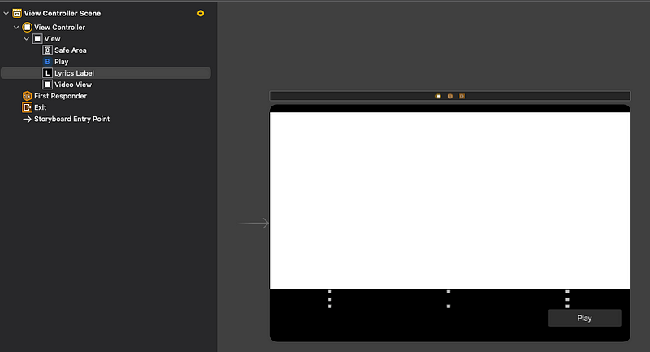

學習目標：
- AVPlayer
- NotificationCenter
- Timer
- Swift Optional
- Function
- Switch Case
練習成果：
原始碼：
歌詞：
今晚 我想將那天的螢火
送到你的窗前
含意是"我愛你"
我想起我們的初吻
不管何時 只要閉上雙眼
就能奔向那最遙遠的地方
就像我在被浪濤湧來的沙上寫下的字跡般
你感覺也會像他們那樣從此消失
總是想念
雖然無法將我心裡所有的話語，說給你聽
但那裡頭，全都是"我愛你"
我何德何能
能擁有名為你的這份幸運
若我們現在能望著對方
該有多美好
就像我在被浪濤湧來的沙上寫下的字跡般
你感覺也會像他們那樣從此消失
還是想念
雖然無法將我寫在日記上的一字一句
都告訴你
但字字句句都代表著我愛你
今晚 我想將那天的螢火
送到你的窗前
希望今夜的你有個美好的夢
影片來源：https://www.youtube.com/watch?v=BzYnNdJhZQw
歌詞來源：https://tinyurl.com/2p9c5d8a
Storyboard:

過程：
本次結合幾個項目，練習 SDK 使用與熟悉 Swift 語法，只用 function print 無法滿足自己的期待，所以上網查了一些資料並搭配上課內容製作，將 AVPlayerViewController 加進 UIView 應該是最困難的部分，原本考慮使用 Container View 去做，但還不知道怎麼控制多個 Controller，並且跟 Storyboard 串接起來。
主要在 iPad Pro 12.9 與 iPad Mini 6 實機測試過，iPhone 版面會看不到歌詞。
- 新增 UIView，取得 IBOutlet -> Line 12
- 將 AVPlayerViewController 加進 UIView -> Line 50
- 用 IBAction 控制 影片播放並開始計時 -> Line59
- 註冊 View 生命週期與影片播放結束的通知 -> Line 20~28
Partial script
import AVFoundation
import AVKit
import UIKit
class ViewController: UIViewController {
@IBOutlet weak var lyricsLabel: UILabel!
@IBOutlet weak var videoView: UIView!
var player: AVPlayer?
var timer: Timer?
var counter = 0.0
var isPlaying = false
override func viewDidLoad() {
super.viewDidLoad()
// listen to active and resign notifications
// ref: https://stackoverflow.com/a/45955660
NotificationCenter.default.addObserver(self, selector: #selector(self.openAndCloseActivity),
name: UIApplication.didBecomeActiveNotification, object: nil)
NotificationCenter.default.addObserver(self, selector: #selector(self.openAndCloseActivity),
name: UIApplication.willResignActiveNotification, object: nil)
// listen to end play notification
// ref: https://www.tutorialspoint.com/how-to-use-swift-to-detect-when-avplayer-video-ends-playing
NotificationCenter.default.addObserver(self, selector: #selector(self.videoDidEnd),
name: NSNotification.Name.AVPlayerItemDidPlayToEndTime, object: nil)
// setup avplayer controller
initVideoView()
}
// setup avplayer controller
//
// add avplayer controller to the current view and hide playback controls
private func initVideoView() {
// ref: https://medium.com/@nabilsafatli/how-to-create-a-custom-control-for-avplayer-1e53b9188ae3
guard let url = Bundle.main.url(forResource: "night", withExtension: "mp4") else { return }
self.player = AVPlayer(url: url)
//player!.rate = 1 //auto play
let playerFrame = CGRect(x: 0, y: 0, width: videoView.frame.width, height: videoView.frame.height)
let playerViewController = AVPlayerViewController()
playerViewController.player = self.player
playerViewController.view.frame = playerFrame
addChild(playerViewController) // add player controller to view controller
videoView.addSubview(playerViewController.view)
playerViewController.didMove(toParent: self)
playerViewController.showsPlaybackControls = false // hide playback controls
}
// handle play click event
@IBAction func playVideo(_ sender: UIButton) {
if !self.isPlaying {
self.isPlaying = true // set flag
self.counter = 0.0 // init counter
self.player?.seek(to: CMTime(value: CMTimeValue(0.0), timescale: 1000)) // seek to head
// init timer.
// ref: https://medium.com/彼得潘的-swift-ios-app-開發教室/透過-timer-設定每幾秒重複執行-function-3c80f449107
self.timer = Timer.scheduledTimer(
timeInterval: 0.1,
target: self,
selector: #selector(updateLyrics),
userInfo: nil,
repeats: true)
// play video
self.player?.play()
} else {
print("already playing, do nothing...")
}
}
@objc func updateLyrics() {
self.counter += 0.1 // increase counter
switch self.counter {
case 5.0...20.0:
self.lyricsLabel.text = "IU - 夜信" // 0
case 24.4...37.4:
self.lyricsLabel.text = "今晚 我想將那天的螢火" // 1
case 37.5...47.0:
self.lyricsLabel.text = "送到你的窗前" // 2
case 49.6...59.0:
self.lyricsLabel.text = "含意是 \"我愛你\"" // 3
case 68.8...80.8:
self.lyricsLabel.text = "我想起我們的初吻" // 4
case 80.9...90.0:
self.lyricsLabel.text = "不管何時 只要閉上雙眼" // 5
case 93.1...103.2:
self.lyricsLabel.text = "就能奔向那最遙遠的地方" // 6
case 105.7...115.8:
self.lyricsLabel.text = "就像我在被浪濤湧來的沙上寫下的字跡般" // 7,8
case 115.9...123.4:
self.lyricsLabel.text = "你感覺也會像他們那樣從此消失" // 9
case 123.5...127.4:
self.lyricsLabel.text = "總是想念" // 10
case 127.5...141.0:
self.lyricsLabel.text = "雖然無法將我心裡所有的話語 說給你聽" // 11,12
case 141.2...151.3:
self.lyricsLabel.text = "但那裡頭全都是 \"我愛你\"" // 13
case 160.1...166.0:
self.lyricsLabel.text = "我何德何能" // 14
case 166.1...171.7:
self.lyricsLabel.text = "能擁有名為你的這份幸運" // 15
case 171.8...176.8:
self.lyricsLabel.text = "若我們現在能望著對方" // 16
case 176.9...184.0:
self.lyricsLabel.text = "該有多美好" // 17
case 184.1...194.1:
self.lyricsLabel.text = "就像我在被浪濤湧來的沙上寫下的字跡般" // 18,19
case 194.2...202.5:
self.lyricsLabel.text = "你感覺也會像他們那樣從此消失" // 20
case 202.6...205.8:
self.lyricsLabel.text = "還是想念" // 21
case 205.9...212.1:
self.lyricsLabel.text = "雖然無法將我寫在日記上的一字一句" // 22
case 212.2...220.5:
self.lyricsLabel.text = "都告訴你" // 23
case 220.6...226.4:
self.lyricsLabel.text = "但字字句句都代表著我愛你" // 24
case 228.5...241.9:
self.lyricsLabel.text = "今晚 我想將那天的螢火" // 25
case 242.0...249.7:
self.lyricsLabel.text = "送到你的窗前" // 26
case 255.9...267.2:
self.lyricsLabel.text = "希望今夜的你有個美好的夢" // 27
default:
self.lyricsLabel.text = ""
}
}
// handle vidie end notification
// ref: https://www.tutorialspoint.com/how-to-use-swift-to-detect-when-avplayer-video-ends-playing
@objc func videoDidEnd(notification: NSNotification) {
print("video ended")
self.timer?.invalidate() // stop timer
self.isPlaying = false
self.lyricsLabel.text = ""
}
// handle activity resume and close
// ref: https://stackoverflow.com/a/45955660
@objc func openAndCloseActivity(_ notification: Notification) {
if notification.name == UIApplication.didBecomeActiveNotification{
print("resume activity")
// seek to head
self.player?.seek(to: CMTime(value: CMTimeValue(0.0), timescale: 1000)) // ref: https://stackoverflow.com/a/59839041
} else{
print("close activity")
self.player?.pause() // pause player
self.timer?.invalidate() // stop timer
self.isPlaying = false
self.lyricsLabel.text = ""
}
}
}
免責聲明：
影片使用只為了學習目的，沒有營利行為，版權屬於原創作方 1theK.